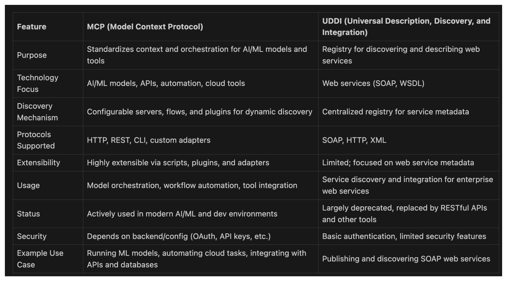

What is Model Context Protocol (MCP)
- MCP is a Open protocol that standardizes how applications provide context to LLMs
- Think of MCP like a USB-C port for AI applications.
- Just as USB-C provides a standardized way to connect the devices to various peripherals and accessories
- MCP provides a standardized way to connect AI models to different data sources and tools
Similar to UDDI
Hello World
We can keep the Hello World tradition created by our beloved K&R book on C programming language by developing a simple MCP server, which gets stock quotes using Yahoo Finance Service.
MCP Concepts Script - Stock Quotes
# MCP Concepts Script - Stock Quotes
# This script demonstrates using MCP to fetch stock quotes from Yahoo Finance.
# Import FastMCP server from the MCP package
from mcp.server.fastmcp import FastMCP
from typing import Any # For type hints
import yfinance as yf # Yahoo Finance API
from datetime import datetime, timedelta # For date calculations
# Initialize FastMCP server for stock quotes
mcp = FastMCP("StockQuotes") # Create an MCP server instance named "StockQuotes"
# Helper to get last month's close price for a symbol
def get_last_month_close(symbol: str) -> str:
today = datetime.now() # Get current date
last_month = today - timedelta(days=30) # Go back 30 days
ticker = yf.Ticker(symbol) # Create a Ticker object for the symbol
# Fetch historical data for the date range
hist = ticker.history(start=last_month.strftime('%Y-%m-%d'), end=(last_month + timedelta(days=1)).strftime('%Y-%m-%d'))
if not hist.empty:
close = hist['Close'].iloc[0] # Get the close price
return f"{close:.2f}" # Format as string with 2 decimals
return "N/A" # Return N/A if no data
# Helper to get last year's close price for a symbol
def get_last_year_close(symbol: str) -> str:
today = datetime.now() # Get current date
last_year = today - timedelta(days=365) # Go back 1 year
# Try up to 7 days before the target date to find a close price
for i in range(7):
check_date = last_year - timedelta(days=i) # Try previous days if needed
next_day = check_date + timedelta(days=1)
ticker = yf.Ticker(symbol)
# Fetch historical data for the date range
hist = ticker.history(start=check_date.strftime('%Y-%m-%d'), end=next_day.strftime('%Y-%m-%d'))
if not hist.empty:
close = hist['Close'].iloc[0]
return f"{close:.2f}"
return "N/A" # Return N/A if no data found
# MCP tool to get stock quote
def format_stock_quote(info: dict, last_month_close: str = "N/A", last_year_close: str = "N/A") -> str:
"""Format stock info into a readable string, including last month's and last year's close."""
return f"""
Symbol: {info.get('symbol', 'Unknown')}
Name: {info.get('shortName', 'Unknown')}
Current Price: {info.get('regularMarketPrice', 'N/A')}
Day High: {info.get('dayHigh', 'N/A')}
Day Low: {info.get('dayLow', 'N/A')}
Previous Close: {info.get('regularMarketPreviousClose', 'N/A')}
Last Month Close (same day): {last_month_close}
Last Year Close (same day): {last_year_close}
Currency: {info.get('currency', 'N/A')}
"""
@mcp.tool() # Register this function as an MCP tool
def get_stock_quote(symbol: str) -> str:
"""Get the latest stock quote for a given symbol from Yahoo Finance.
Args:
symbol: Stock ticker symbol (e.g. AAPL, MSFT)
"""
ticker = yf.Ticker(symbol) # Create a Ticker object
info = ticker.info # Get stock info as a dictionary
last_month_close = get_last_month_close(symbol) # Get last month's close
last_year_close = get_last_year_close(symbol) # Get last year's close
if not info or 'regularMarketPrice' not in info:
return f"No data found for symbol: {symbol}" # Handle missing data
info['symbol'] = symbol.upper() # Add symbol to info dict
return format_stock_quote(info, last_month_close, last_year_close) # Format and return
@mcp.tool() # Register this function as an MCP tool
def get_stock_quotes(symbols: list[str]) -> str:
"""Get the latest stock quotes for a list of symbols from Yahoo Finance.
Args:
symbols: List of stock ticker symbols (e.g. ["AAPL", "MSFT"])
"""
results = []
for symbol in symbols:
ticker = yf.Ticker(symbol)
info = ticker.info
last_month_close = get_last_month_close(symbol)
last_year_close = get_last_year_close(symbol)
if not info or 'regularMarketPrice' not in info:
results.append(f"No data found for symbol: {symbol}")
else:
info['symbol'] = symbol.upper()
results.append(format_stock_quote(info, last_month_close, last_year_close))
return "\n====================\n".join(results) # Join results with separator
# main function to run the MCP server
def main():
print("Starting MCP StockQuotes server...") # Print startup message
mcp.run(transport='stdio') # Start the MCP server using stdio transport
print("MCP StockQuotes server is running.") # Print running message
if __name__ == "__main__":
main() # Run main if script is executed directly
Running with MCP client CLI
cp MCP_concepts_stockquotes.py servers
python mcp_client4.py servers/MCP_concepts_stockquotes.py
[05/30/25 10:58:01] INFO Processing request of type ListToolsRequest
╭────────────────────────────────────────────────────────────────────────────── MCP Server Connection ──────────────────────────────────────────────────────────────────────────────╮
│ Available Tools │
│ ┏━━━━━━━━━━━━━━━━━━┳━━━━━━━━━━━━━━━━━━━━━━━━━━━━━━━━━━━━━━━━━━━━━━━━━━━━━━━━━━━━━━━━━━━━━━━┓ │
│ ┃ Tool Name ┃ Description ┃ │
│ ┡━━━━━━━━━━━━━━━━━━╇━━━━━━━━━━━━━━━━━━━━━━━━━━━━━━━━━━━━━━━━━━━━━━━━━━━━━━━━━━━━━━━━━━━━━━━┩ │
│ │ get_stock_quote │ Get the latest stock quote for a given symbol from Yahoo Finance. │ │
│ │ get_stock_quotes │ Get the latest stock quotes for a list of symbols from Yahoo Finance. │ │
│ └──────────────────┴───────────────────────────────────────────────────────────────────────┘ │
╰──────────────────────────────────────────────────────────────── Connected to servers/MCP_concepts_stockquotes.py ─────────────────────────────────────────────────────────────────╯
╭─────────────────────────────────────────────────────────────────────────────────── MCP Client ────────────────────────────────────────────────────────────────────────────────────╮
│ Welcome to MCP Client! │
│ Type your queries or 'quit' or 'exit' to exit. │
╰───────────────────────────────────────────────────────────────────────────────────────────────────────────────────────────────────────────────────────────────────────────────────╯
Query: get Stock Quote for Microsoft
[05/30/25 10:58:32] INFO Processing request of type ListToolsRequest
╭───────────────────────────────────────────────────────────────────────────────── Ollama Request ──────────────────────────────────────────────────────────────────────────────────╮
│ { │
│ "model": "llama3.2:latest", │
│ "messages": [ │
│ { │
│ "role": "system", │
│ "content": "\n You are a helpful assistant with access to weather tools. For weather-related queries, use:\n - get_alerts(state): Fetch active weathe │
│ }, │
│ { │
│ "role": "user", │
│ "content": "get Stock Quote for Microsoft" │
│ } │
│ ], │
│ "stream": false, │
│ "format": "json", │
│ "tools": [ │
│ { │
│ "type": "function", │
│ "function": { │
│ "name": "get_stock_quote", │
│ "description": "Get the latest stock quote for a given symbol from Yahoo Finance.\n\n Args:\n symbol: Stock ticker symbol (e.g. AAPL, MSFT)\n ", │
│ "parameters": { │
│ "properties": { │
│ "symbol": { │
│ "title": "Symbol", │
│ "type": "string" │
│ } │
│ }, │
│ "required": [ │
│ "symbol" │
│ ], │
│ "title": "get_stock_quoteArguments", │
│ "type": "object" │
│ } │
│ } │
│ }, │
│ { │
│ "type": "function", │
│ "function": { │
│ "name": "get_stock_quotes", │
│ "description": "Get the latest stock quotes for a list of symbols from Yahoo Finance.\n\n Args:\n symbols: List of stock ticker symbols (e.g. [\"AAPL\", \"MSFT │
│ "parameters": { │
│ "properties": { │
│ "symbols": { │
│ "items": { │
│ "type": "string" │
│ }, │
│ "title": "Symbols", │
│ "type": "array" │
│ } │
│ }, │
│ "required": [ │
│ "symbols" │
│ ], │
│ "title": "get_stock_quotesArguments", │
│ "type": "object" │
│ } │
│ } │
│ } │
│ ] │
│ } │
╰───────────────────────────────────────────────────────────────────────────────────────────────────────────────────────────────────────────────────────────────────────────────────╯
╭───────────────────────────────────────────────────────────────────────────────── Ollama Response ─────────────────────────────────────────────────────────────────────────────────╮
│ { │
│ "model": "llama3.2:latest", │
│ "created_at": "2025-05-30T14:58:36.791125Z", │
│ "message": { │
│ "role": "assistant", │
│ "content": "", │
│ "tool_calls": [ │
│ { │
│ "function": { │
│ "name": "get_stock_quote", │
│ "arguments": { │
│ "symbol": "MSFT" │
│ } │
│ } │
│ } │
│ ] │
│ }, │
│ "done_reason": "stop", │
│ "done": true, │
│ "total_duration": 4150598791, │
│ "load_duration": 2231560541, │
│ "prompt_eval_count": 444, │
│ "prompt_eval_duration": 1394896708, │
│ "eval_count": 19, │
│ "eval_duration": 516708209 │
│ } │
╰───────────────────────────────────────────────────────────────────────────────────────────────────────────────────────────────────────────────────────────────────────────────────╯
╭──────────────────────────────────────────────────────────────────────────────────── Tool Call ────────────────────────────────────────────────────────────────────────────────────╮
│ Calling tool: get_stock_quote │
│ Arguments: { │
│ "symbol": "MSFT" │
│ } │
╰───────────────────────────────────────────────────────────────────────────────────────────────────────────────────────────────────────────────────────────────────────────────────╯
Executing get_stock_quote...
[05/30/25 10:58:36] INFO Processing request of type CallToolRequest
╭────────────────────────────────────────────────────────────────────────── Tool Result: get_stock_quote ───────────────────────────────────────────────────────────────────────────╮
│ [TextContent(type='text', text='\nSymbol: MSFT\nName: Microsoft Corporation\nCurrent Price: 458.52\nDay High: 460.215\nDay Low: 457.6001\nPrevious Close: 458.68\nLast Month │
│ Close (same day): 394.54\nLast Year Close (same day): 411.51\nCurrency: USD\n', annotations=None)] │
╰───────────────────────────────────────────────────────────────────────────────────────────────────────────────────────────────────────────────────────────────────────────────────╯
╭────────────────────────────────────────────────────────────────────────────────── Query Result ───────────────────────────────────────────────────────────────────────────────────╮
│ [TextContent(type='text', text='\nSymbol: MSFT\nName: Microsoft Corporation\nCurrent Price: 458.52\nDay High: 460.215\nDay Low: 457.6001\nPrevious Close: 458.68\nLast Month │
│ Close (same day): 394.54\nLast Year Close (same day): 411.51\nCurrency: USD\n', annotations=None)] │
╰───────────────────────────────────────────────────────────────────────────────────────────────────────────────────────────────────────────────────────────────────────────────────╯
Sample Query Result
Symbol: MSFT
Name: Microsoft Corporation
Current Price: 458.52
Day High: 460.215
Day Low: 457.6001
Previous Close: 458.68
Last Month Close (same day): 394.54
Last Year Close (same day): 411.51
Currency: USD
Using Claude Desktop to run StockQuote Server

Salesforce Query